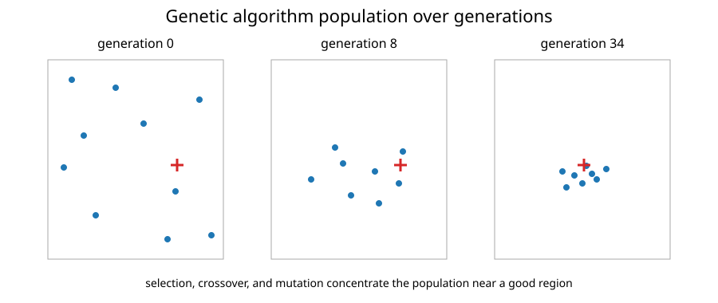

Genetic Algorithms
A genetic algorithm (GA) searches with a population of candidate solutions rather than a single trajectory.
Each generation applies three main operations:
- selection;
- crossover;
- mutation.
Population and fitness
For minimization, candidates with lower objective values are fitter. The repository implementation uses tournament selection: two individuals are sampled and the better one is copied into the mating pool.
Tournament selection avoids needing a special transformation from objective value to probability.
Crossover
For two real-valued parents $x^{(1)}$ and $x^{(2)}$, blend crossover can use
$$ y^{(1)} = \alpha\odot x^{(1)} + (1 - \alpha)\odot x^{(2)}, $$
$$ y^{(2)} = (1 - \alpha)\odot x^{(1)} + \alpha\odot x^{(2)}, $$
with componentwise random $\alpha\in[0,1]^n$.
Mutation
Mutation adds random perturbations to selected genes. It maintains diversity and creates information not already present in the selected parents.

Feasibility and a complete generation
For a box $\ell\leq x\leq u$, componentwise blend crossover with $\alpha_i\in[0,1]$ keeps every child coordinate between the corresponding parent coordinates, so feasible parents produce box-feasible children. This does not preserve arbitrary coupled constraints: componentwise mixing uses different weights in different coordinates. A common scalar convex-combination weight preserves a convex feasible set, but neither form preserves a general nonconvex set.
A generation therefore needs a full sequence: evaluate the population, select parents, generate children, mutate selected coordinates, enforce the chosen constraint policy, evaluate the new candidates, and update the best-so-far record. With a per-gene mutation probability $p_m$ in $n$ dimensions, the expected number of mutated coordinates per individual is $np_m$. Mutation scales should be interpreted relative to coordinate ranges rather than assumed to have equal effect in different physical units.
Clipping repairs box violations but can pile candidates onto boundaries. General constraints may need a feasibility-preserving representation, repair method, or a documented penalty. The real-valued implementation here does not automatically support discrete or mixed-variable encodings, even though the broader GA family can.
Finite generations provide a best point found, not a proof of global optimality. Report actual objective calls, including any repeated evaluations during selection, and compare independent runs under the same evaluation budget. Cached fitness values can make the rough $P(G+1)$ count below attainable.
Exploration versus selection pressure
Strong selection pressure rapidly concentrates the population, which speeds exploitation but risks premature convergence. Mutation and a sufficiently large population preserve exploration.
The right balance is problem dependent.
Elitism
Many practical GAs explicitly copy one or more best individuals into the next generation. The compact repository implementation instead tracks the best point found separately; the evolving population itself does not guarantee that the best individual survives.
Computational cost
If the population size is $P$ and the algorithm runs for $G$ generations, it performs roughly
$$ P(G + 1) $$
objective evaluations, aside from any reuse or parallelization.
This is often expensive compared with gradient methods, but the evaluations are naturally parallel.
When genetic algorithms are useful
GAs are most attractive when:
- derivatives are unavailable;
- the search landscape is multimodal;
- variables are mixed or discrete;
- one function evaluation is not prohibitively expensive;
- parallel hardware is available.
For smooth convex problems, they are usually far less efficient than deterministic local methods.